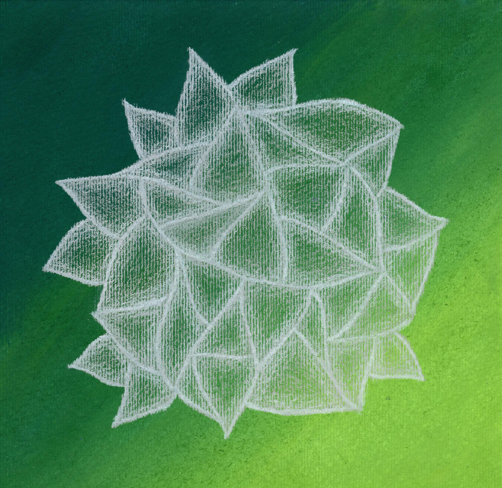

Statement
My series, Feigned Composure, is a manifestation of mild emotional detachment, which is a defense mechanism used to avoid and hide feelings. I use interwoven triangles rendered in different marks to cover the plane and, sometimes, conceal what’s beneath. The pattern represents dualism. While creating the design, I either experience discomfort due to the work’s time-consuming nature, or I feel nothing because it regulates unwanted emotions. However, the viewer witnesses none of this and, instead, sees pieces that seem “dreamlike” and “calm.”
This pattern began nine years ago when I entered high school. I chose to hide words in an open-ended project by drawing and cutting out curved lines then transferring them to black paper which I glued to a white background. My art teacher compared the shapes to folds in a tablecloth which a fictional woman she had read about saw sentences in. Later, I stripped the design of its letters and adapted the curves into triangles, which led to gradients that I used to obscure the queen of chess in a drawing for my grandfather. The pattern then took on fixed contours that contained colors—at one point being compared to cathedral windows—then eventually lost its outlines and returned to shading. At that stage, it began to resemble plants and broken glass.
Since then, I’ve found myself pushing the design, looking for its limitations through different mediums and styles.
